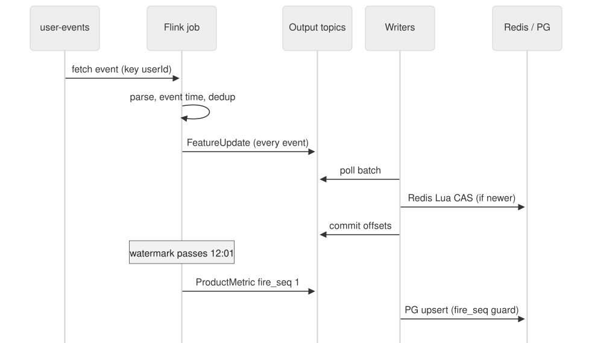
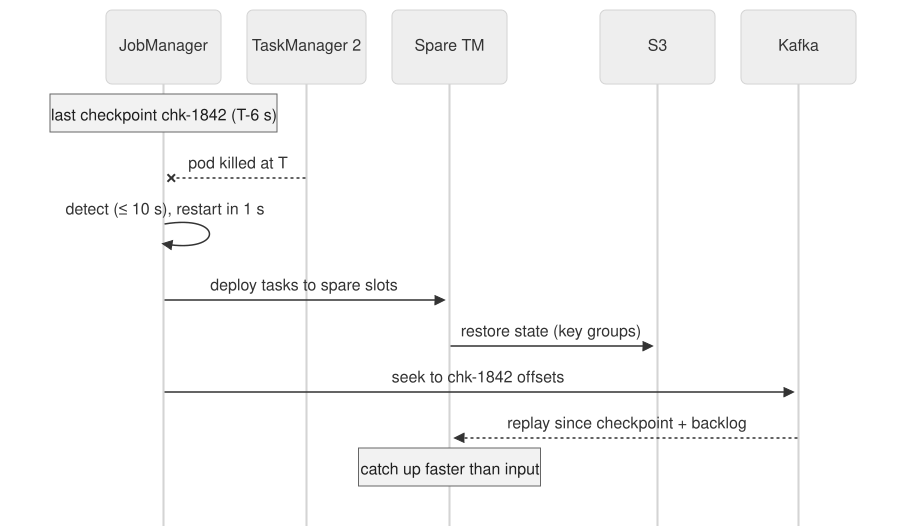

A fault-tolerant streaming platform: user-activity events flow through Kafka into an Apache Flink job that applies event-time windows, watermarks, keyed state, deduplication and checkpointing, then serves online user features in Redis and per-minute product analytics in PostgreSQL. Java, Kafka, Flink, PostgreSQL, Redis, AWS and Kubernetes. Everything you need for a 30–45 minute interview.
Resume bullets this booklet defends
What it does. An e-commerce app emits a stream of user-activity events: product views, clicks, add-to-cart actions and purchases. This platform processes that stream continuously and produces two kinds of results within about a second:
The problem it solves. Batch jobs that run every hour are too slow for features a model needs right now. But streaming is hard: events arrive out of order (phones buffer while offline), are duplicated (producers retry), and come in bursts. Machines fail mid-computation. The platform must give correct counts despite all of that, without losing or double-counting events, at 10K+ events per second.
Who would use it. ML teams needing fresh features, product and growth teams watching live dashboards, and any backend that wants "what is happening right now" metrics.
What happens without it. Features are stale (computed hours ago), counts are wrong whenever events arrive late or twice, and a crash means either lost events or double counting.
What makes it technically interesting. Time semantics (event time versus arrival time), state that must survive failures, exactly-once state updates with external stores that are outside Flink's control, backpressure, and recovery in under 30 seconds.
Think of a stadium turnstile counter. Fans (events) arrive at many gates (partitions), sometimes late or walking through twice. Counters at each gate (Flink tasks) keep tallies per section; every ten seconds everyone photographs their tally sheets and gate positions at the same moment (checkpoint), so if a counter faints, a replacement restores the photo and re-counts from that gate position. The scoreboard (Redis/PostgreSQL) is only ever overwritten with full totals, so re-sending a total never inflates it.
At 12:00:58 a user views product p-55310 on a phone. The event reaches Kafka at 12:00:58.010, Flink processes it, and within ~250 ms Redis shows views_5m = 14 for that user. Separately, the view is added to product p-55310's minute window [12:00, 12:01). When the watermark passes 12:01 (about 5 seconds later), Flink emits that minute's totals, and PostgreSQL gets one row. If the same event arrives again (a producer retry), dedup drops it; if a different view of that minute arrives at 12:02:10, the window is re-emitted with corrected totals.
Scope boundary. No public ingestion API (producers write to Kafka directly), no ML model, no offline feature store, no dashboard UI, single AWS region.
| Resume bullet | Concepts you must be able to explain |
|---|---|
| 1. Kafka + Flink pipelines, event-time windows, checkpointing, deduplication | Kafka topics/partitions/offsets, Flink, event time, watermarks, tumbling/sliding windows, keyed state, dedup, checkpointing |
| 2. Consumer-group scaling, backpressure, 10K+ events/s, < 1 s p95 | Consumer groups, backpressure, delivery semantics and idempotent sinks, Redis and PostgreSQL serving, throughput and latency metrics |
| 3. Checkpoint recovery and replay < 30 s; partitioning and parallelism ~2× | Recovery and replay, partitions versus parallelism |
userId) is hashed to pick its partition, so one user's events stay in order on one partition. Each event gets an increasing offset. Events are kept for the retention period (7 days on user-events) regardless of who read them, replicated 3 times with acks=all and min.insync.replicas=2 .user-events (24 partitions); output topics user-features and product-metrics (12 partitions each); a dead-letter topic for malformed events and a topic for very late events. The broker stamps each event's arrival time (LogAppendTime), used to measure latency.result-writer application runs as two consumer groups: features-redis-writer reads user-features and writes Redis; metrics-pg-writer reads product-metrics and writes PostgreSQL. Offsets are committed only after the write succeeds. The cooperative-sticky assignor moves only the partitions that must move, so other writers keep working during a rebalance.keyBy(userId) hash-partitions the stream so all events for one key reach the same subtask. Each subtask is single-threaded for its keys, so state needs no locks.activity-pipeline) at parallelism 12 on 3 TaskManagers × 4 slots, plus one idle spare TaskManager for fast recovery. Deployed with the Flink Kubernetes Operator on EKS.eventTime. Flink assigns it as the record's timestamp, and windows are defined in event time. Processing-time windows would count a view that happened at 12:00:59 but arrived at 12:01:03 in the wrong minute, and replaying the same events would give different answers.watermark = max event time seen − 5 s every 200 ms. An operator's watermark is the minimum across its inputs. A window fires when the watermark passes its end. Partitions with no data for 30 s are marked idle so they do not hold the watermark back; alignment pauses partitions running more than 30 s ahead (important during replay).user-events.late topic instead of being silently dropped. Events stamped more than 10 minutes in the future are rejected, because one bad clock would otherwise push the watermark ahead and make everyone else late.TumblingEventTimeWindows of 1 minute keyed by productId, with an incremental aggregate (one accumulator update per event). User features need a fresh "last 5 minutes" on every event, so they use a pane-based sliding window in keyed state: ten 30-second panes; each event increments one pane, and the feature is the sum of the panes in range.keyBy, each key belongs to one of 256 key groups (the max parallelism), and each key group is owned by exactly one subtask. Flink offers ValueState, MapState and timers per key. The RocksDB backend stores state on local SSD (larger than memory) and supports incremental checkpoints that upload only new files to S3.userId, each subtask keeps MapState<eventId, eventTime> with a 15-minute TTL. If the id is present, drop the event and count a duplicate; otherwise store it and forward. Keying by user reuses the shuffle the features need anyway; duplicates always carry the same user, so they reach the same subtask.eventId; without dedup, counts and revenue would be inflated.as_of_event_time_ms ; PostgreSQL rows are upserted with absolute totals and a guard WHERE new.fire_seq >= old.fire_seq .keyBy, load depends on key groups, not partitions. Partition counts should be planned up front, because adding partitions remaps keys.feat:u:{userId}, with fields such as views_5m, purchase_amount_1h_minor , last_event_type and as_of_event_time_ms , TTL 2 hours refreshed on each write. Writers send pipelined Lua scripts (EVALSHA) in batches of 500; each script atomically compares event times and writes only if newer.product_metrics_minute , primary key (product_id, window_start) , daily partitions for retention. Writers batch 500 upserts per transaction: INSERT … ON CONFLICT (product_id, window_start) DO UPDATE SET … WHERE EXCLUDED.fire_seq >= t.fire_seq .fire_seq guard mean duplicates overwrite with the same values and an older firing can never overwrite a newer late correction.Say these precisely. (1) "Consumer-group scaling" applies to the result-writer services; Flink's Kafka source assigns partitions itself, and Flink scales by changing parallelism from a savepoint. (2) "10K+ events/sec under 1 sec p95" means processing throughput at stable lag and processing latency (Kafka append → Redis), not ingestion rate, not event-time latency, and not analytics, which by design wait for the minute window plus the watermark. (3) "< 30 sec recovery" is defined for a TaskManager failure with a spare TaskManager; JobManager failover can take longer. (4) "~2×" compares against a disclosed baseline that left slots idle. (5) The design gives exactly-once state and effectively-once results, not end-to-end exactly-once delivery. All four numbers are benchmark targets, not measurements.
| Technology | Purpose in the project | Why it was selected |
|---|---|---|
| Java 17 | Flink job, writers, event generator | First-class Flink and Kafka APIs |
| Apache Kafka (Amazon MSK) | Input log, output topics, DLQ and late topics | Durable, partitioned, replayable; consumer groups |
| Apache Flink 1.20 | Parsing, event time, dedup, features, windows, checkpoints | True event-time processing, RocksDB keyed state, barrier checkpoints, credit-based backpressure |
| RocksDB state backend + S3 | Large keyed state; incremental checkpoints and savepoints | State larger than memory; checkpoint time proportional to changes |
| Redis (ElastiCache) | Online user features | Sub-millisecond hash reads, Lua for atomic compare-and-set, TTL |
| PostgreSQL (RDS) | Per-minute product analytics | SQL, upserts, partitioning |
| Kubernetes (EKS) + Flink Operator | Runs Flink, writers and generator; savepoint-based upgrades | Declarative deployments, HA, scaling |
| Prometheus + Grafana | Lag, busy/backpressure, checkpoint and latency metrics | Flink and Kafka metrics in one place |
How they work together. Producers append events to Kafka. Flink reads them, keeps per-user and per-product state in RocksDB, snapshots that state with the Kafka offsets to S3 every 10 seconds, and writes results to two Kafka output topics. Two consumer groups of a small Java writer service move those results into Redis and PostgreSQL with idempotent writes. Everything runs on EKS in one AWS region across three availability zones.
In simple words. Events go into one Kafka topic. One Flink job cleans them, removes duplicates and computes two things from the same event: per-user features (updated on every event) and per-product minute totals (emitted when each minute closes). Flink writes both to Kafka, and small writer services copy them into Redis and PostgreSQL.

Component responsibilities
| Component | Responsibility |
|---|---|
Producers / event-generator |
Send JSON events keyed by userId with acks=all; the generator also injects duplicates, disorder and late events for tests and benchmarks |
Kafka user-events |
Durable input log (24 partitions, RF 3, 7 days); replay source |
Flink activity-pipeline |
Parse and validate (bad events to DLQ), assign event time and watermarks, dedup, user features, product windows, late-event routing, checkpoints |
Kafka user-features, product-metrics |
Durable outputs (12 partitions each) that decouple processing from serving |
features- group |
Batch compare-and-set writes of features to Redis |
metrics-pg-writer group |
Batch idempotent upserts of minute metrics to PostgreSQL |
| S3 | Checkpoints, savepoints, JobManager HA metadata |
| Redis / PostgreSQL | Serving stores for models and dashboards |
How components communicate. All pipeline links are asynchronous and pull-based. Producers to Kafka: Kafka producer with idempotence. Kafka to Flink: Flink's KafkaSource, offsets stored in checkpoints. Inside Flink: network shuffles on keyBy with credit-based flow control. Flink to output topics: KafkaSink, at-least-once. Writers: Kafka consumer groups with manual offset commits after each batch is written. Model services read Redis with HGETALL; dashboards query PostgreSQL.

Complete data flow and how one event feeds both outputs. After parsing and dedup (keyed by userId), the stream splits. Path 1, user features: on the same subtask (no extra shuffle), the event updates that user's panes and Flink immediately emits a FeatureUpdate with the full current feature set to user-features; the Redis writer applies it. Path 2, product analytics: the same event is re-shuffled by productId to the window operator and added to its minute's accumulator; when the watermark passes the minute's end, a ProductMetric with fire_seq = 1 goes to product-metrics, and the PostgreSQL writer upserts it. Malformed events go to user-events.dlq; events later than the 2-minute allowed lateness go to user-events.late.
Where data is stored. Raw events: Kafka, 7 days (the replay source). Dedup sets, panes and open windows: Flink keyed state in RocksDB on local SSD, snapshotted to S3. Outputs: Kafka, 3 days. Serving copies: Redis (TTL 2 h) and PostgreSQL (daily partitions). Redis and PostgreSQL are derived and can be rebuilt by replay.
How it scales.
What happens when a major component fails
| Failure | What happens | Effect on results |
|---|---|---|
| TaskManager crash | JobManager restarts tasks on surviving + spare slots from the last checkpoint; sources rewind | None for state; recent outputs re-emitted (idempotent) |
| JobManager crash | New leader reads the latest checkpoint pointer (Kubernetes HA + S3) and restores | Same, but may exceed 30 s |
| Kafka broker failure | Leader election moves partitions; producers and consumers fail over | None (RF 3, 2 in-sync) |
| Redis or PostgreSQL down | Writers retry with backoff and do not commit offsets; lag grows; Flink unaffected | Stale reads during the outage; nothing lost |
| Writer pod crash | Group rebalance; uncommitted batch redelivered | None (idempotent writes) |
| Checkpoint failures (S3) | Job continues; after 3 consecutive failures it fails and restarts | More replay after recovery |
1. Flink for processing. Chosen: Flink. Why: event time with watermarks, large keyed state, barrier checkpoints, scaling independent of partitions. Alternative: Kafka Streams or Spark Structured Streaming. Why not: Kafka Streams couples scaling to partitions and keeps state in changelog topics; Spark is micro-batch with higher latency. Trade-off: operating a JobManager, checkpoints and the operator.
2. Event time with a 5 s watermark bound and 2 min allowed lateness. Chosen: event-time windows with late re-firing and a late topic. Why: deterministic, replayable results that tolerate moderate disorder. Alternative: processing-time windows. Why not: wrong buckets for late events and different results on replay. Trade-off: analytics wait about 5 s past each window end; very late events need a separate correction path.
3. A Kafka hop between Flink and the stores. Chosen: Flink → output topics → writer consumer groups → stores. Why: a slow database becomes writer lag instead of Flink backpressure and slow checkpoints; writers scale independently; stores can be rebuilt from the output topics. Alternative: Flink sinks writing directly to Redis and PostgreSQL. Why not: a slow store would stall the whole job. Trade-off: one extra hop (about 5–50 ms) and one more deployable.
4. At-least-once output with idempotent sinks. Chosen: at-least-once KafkaSink, absolute values and monotonic guards downstream. Why: sub-second latency. Alternative: exactly-once transactional Kafka sink. Why not: output becomes visible only after each checkpoint commits, adding 10+ s. Trade-off: every sink must be idempotent.
5. Pane-based sliding features in keyed state. Chosen: ten 30 s panes, updated per event. Why: per-event freshness with one pane update per event. Alternative: Flink's native sliding window. Why not: results only every 30 s, and each event updates 10 windows. Trade-off: "5 minutes" is 4.5–5 minutes; custom code to test.
6. 24 partitions, parallelism 12, a spare TaskManager. Chosen: even partition assignment with headroom, max parallelism fixed at 256, one idle TaskManager. Why: removes stragglers (~2× target) and pod scheduling from recovery (< 30 s target). Alternative: 6 partitions at parallelism 4; rely on Kubernetes to reschedule. Why not: uneven load; 15–60 s to get a new pod. Trade-off: broker overhead and paying for idle capacity.
A user views a product at 12:00:58. Figure 3 shows the two output paths.

userId with acks=all. The broker appends it to partition hash(userId) % 24, stamps the append time, replicates it to two in-sync followers and acknowledges.eventTime; the partition's watermark tracker updates its maximum.keyBy(userId) sends the event to the subtask that owns the user's key group.eventId is already in the user's 15-minute set, drop it; otherwise remember it and continue.views_5m and the other features as of the user's latest event time, and emit a FeatureUpdate to user-features.productId and added to the [12:00, 12:01) accumulator.fire_seq = 1.Scenario A: A duplicate event. A producer times out waiting for an acknowledgement and resends the same event (same eventId). Both copies land on the same partition because they share the key. The first passes dedup and is processed; the second finds its id in the user's MapState and is dropped, incrementing a duplicates metric. If the copy arrived more than 15 minutes later, it would not be caught (documented limit).
Scenario B: A late event. The minute [12:00, 12:01) fired at watermark 12:01 with fire_seq = 1. An event with time 12:00:40 arrives when the watermark is 12:02:10, within the 2-minute allowed lateness: the accumulator is updated and the window re-fires with fire_seq = 2 and full corrected totals, which the guarded upsert writes over the older row. Another event with time 12:00:50 arrives at watermark 12:03:30, beyond lateness: it goes to user-events.late for an optional correction job instead of being silently dropped. The feature path handles the same event independently: if it is within the user's 5-minute pane range it is counted, otherwise skipped.
Scenario C: A TaskManager dies (checkpoint recovery).

The JobManager notices the lost TaskManager through the broken connection (seconds) or the 10 s heartbeat timeout. Because keyBy connects every task to every other, the whole job restarts after a 1 s delay. The scheduler needs 12 slots: 8 from the healthy TaskManagers and 4 immediately from the spare (without it, Kubernetes would need 15–60 s to schedule and start a new pod). Subtasks restore their key groups from checkpoint chk-1842 (local copies where possible, S3 otherwise), sources seek to the checkpoint's offsets, and the ~6 seconds of events since the checkpoint are reprocessed; outputs for them are re-emitted and absorbed by idempotent writes. Then the backlog that built up during the outage drains at the job's maximum rate. Recovery is declared when lag is back in its normal band for 30 s.
| Guarantee | Holds? | Where it comes from |
|---|---|---|
| Each event affects Flink state exactly once | Yes | Checkpoint = offsets + state; rewind on recovery |
| No acknowledged event lost | Yes | Kafka RF 3, acks=all, min., 7-day retention |
| Output records delivered exactly once | No | At-least-once sink; duplicates after recovery |
| Stored results equal exactly-once results | Yes, after convergence | Absolute values + monotonic guards (as_, fire_seq) |
| Duplicates removed | Within 15 min | Keyed MapState with TTL |
| Window results final at first firing | No | Late re-firings within 2 min can correct them |
| Very late events counted in analytics | No | Routed to user-events.late |
| Redis and PostgreSQL agree at every instant | No | Independent outputs with different timing |
| Per-user ordering | Yes | Same key → same partition → same subtask |
Where consistency comes from: checkpoints tie state to input positions, Kafka retention makes everything recomputable, and idempotent, monotonic sink writes make re-delivery harmless. Failures are handled by restoring and replaying (Flink), retrying without committing offsets (writers) and buffering as lag (Kafka). Accepted trade-offs: analytics wait for windows plus the watermark; a 15-minute dedup horizon; very late events excluded; approximate pane boundaries; JobManager failover may exceed 30 s.
"I built a real-time event processing platform on Kafka and Apache Flink. An e-commerce app sends user events like views, clicks and purchases, and the platform turns them, within about a second, into two things: per-user features in Redis that ML models read, like 'views in the last five minutes', and per-product, per-minute analytics in PostgreSQL for dashboards.
Events go into a Kafka topic keyed by user. A single Flink job parses them, assigns event time with watermarks so late and out-of-order events land in the right window, removes duplicates using keyed state, updates sliding-window user features on every event, and computes one-minute tumbling windows per product. Flink writes results to Kafka output topics, and two consumer groups of writer services apply them to Redis and PostgreSQL with idempotent writes.
For reliability, Flink checkpoints its state and Kafka offsets to S3 every ten seconds, so after a failure it rewinds and every event affects state exactly once; the sinks are idempotent, so re-sent results are harmless. A spare TaskManager makes recovery fast.
The targets were 10K events per second at under one second p95 processing latency, under 30-second recovery, and about 2× throughput from rebalancing partitions and parallelism. Those are benchmark targets with a written method, not production measurements."
"Problem. Two consumers need the same event stream processed in near real time: ML models need fresh per-user features, and analysts need per-product minute metrics. Events arrive out of order, sometimes twice, and in bursts, and machines fail. Results must still be correct.
Requirements. Ingest into Kafka; validate and route bad events aside; event time with five seconds of tolerated disorder; dedup within 15 minutes; per-user sliding features updated on every event; one-minute product windows with two minutes of allowed lateness; idempotent writes to Redis and PostgreSQL; automatic recovery; and replay from any time in the last seven days.
Technology. Kafka as the durable, replayable log. Flink because it has real event-time processing, large keyed state on RocksDB, and barrier-based checkpoints. Redis for millisecond feature reads, PostgreSQL for SQL analytics, all on EKS with S3 for checkpoints.
Architecture. [Draw Figure 2.] Producers write to user-events, 24 partitions keyed by user. The Flink job runs at parallelism 12: source and parse, event time and watermarks, dedup keyed by user, then the stream splits. User features stay on the same subtask; product metrics are re-keyed by product into tumbling windows. Both go to Kafka output topics, and two writer consumer groups apply them to the stores.
Key decisions. I put a Kafka hop before the stores so a slow database shows up as writer lag instead of backpressuring Flink. I chose at-least-once output with idempotent sinks over Flink's transactional sink, because the transactional one only publishes after each checkpoint, which would cost ten seconds of latency. For features I used 30-second panes in keyed state so 'last five minutes' updates on every event.
Reliability and performance. Checkpoints every ten seconds give exactly-once state; Redis writes use a Lua compare-and-set on event time and PostgreSQL upserts are guarded by a fire sequence, so duplicates and replays are harmless. Backpressure is Flink's credit-based flow control, with Kafka absorbing bursts as lag. For throughput, I moved from six partitions at parallelism four, which left two subtasks overloaded, to 24 at parallelism 12, and removed Kryo serialisation and a redundant shuffle. The 10K per second, sub-second p95, 30-second recovery and 2× numbers are targets I designed for."
"Motivation. Stream processing is where time semantics, state, exactly-once, backpressure and recovery all meet. I scoped it to one realistic case, e-commerce activity, with two very different outputs: per-event features and per-minute analytics.
Architecture. [Draw Figure 2.] Kafka on MSK with user-events at 24 partitions, replication three, seven-day retention, keyed by user so one user's events stay ordered. The broker stamps append time, which I use for latency measurement. One Flink job, deployed by the Flink Kubernetes Operator, on three TaskManagers with four slots each, plus a spare.
Time. Each event carries its own event time. Watermarks are max event time seen minus five seconds, emitted per partition, and an operator's watermark is the minimum of its inputs. Idle partitions are excluded after 30 seconds so they don't freeze the watermark, and I reject events more than ten minutes in the future, because one bad clock would push the watermark ahead and make everyone else late. A minute window fires about five seconds after it ends. Up to two minutes late, it re-fires with corrected totals; beyond that, events go to a late topic rather than being silently dropped.
State. After keyBy(userId), each user lives in one of 256 key groups owned by exactly one subtask, so state needs no locks. Dedup is a MapState of event ids with a 15-minute TTL. Features use ten 30-second panes for five minutes and twelve five-minute panes for one hour of purchases. Each event updates one pane, and the feature is the sum, emitted immediately. Product metrics are a standard tumbling window with an incremental aggregate. State lives in RocksDB on local SSD, around a gigabyte for half a million active users, illustratively.
Checkpoints. Every ten seconds the JobManager injects barriers at the sources. Each operator snapshots when the barrier has arrived on all inputs, so the checkpoint is a consistent cut of offsets plus state. If backpressure delays alignment for more than five seconds, Flink switches to unaligned checkpoints. RocksDB checkpoints are incremental, so only new files go to S3.
Outputs and exactly-once. State is exactly-once, but output to Kafka is at-least-once: anything emitted after the last checkpoint is emitted again after recovery. I made that harmless downstream. Feature updates carry the full feature set and an as-of event time, and the Redis writer uses a Lua script that ignores anything older than what's stored. Window results carry full totals and a fire sequence, and the PostgreSQL upsert only overwrites when the sequence is the same or newer. Writers commit Kafka offsets only after the write succeeds, so a crash in between just rewrites the same values. That's effectively-once.
Scaling and backpressure. Writers are consumer groups, so I scale them by adding pods up to 12, and the cooperative-sticky assignor keeps rebalances small. Inside Flink, credit-based flow control propagates pressure back to the source, and Kafka holds the backlog as lag. To diagnose I look for the most downstream operator that is busy but not backpressured. I also lowered the network buffer timeout to 20 milliseconds so shuffles don't add 100 milliseconds each.
Recovery. If a TaskManager dies, detection takes a few seconds, up to the ten-second heartbeat timeout; the job restarts after one second on the surviving slots plus the spare, restores state from the last checkpoint, rewinds Kafka, replays the few seconds since the checkpoint and then drains the backlog. Recovery time is detection plus restart plus restore plus drain, and drain depends on headroom: backlog divided by catch-up rate minus input rate. That's why the throughput work matters for recovery too. Operational replay is a separate tool: start a job from a timestamp, an hour early to warm state, and let it overwrite results.
Performance and numbers. The baseline had six partitions at parallelism four, so two source subtasks each carried a third of the input, and Kryo serialisation plus a redundant shuffle added per-record cost. The optimised version has 24 partitions at parallelism 12, POJO serialisation, one fewer shuffle and batched writes. I'd measure max sustainable throughput with a step ramp where lag stays flat and p95 stays under a second, three runs, plus an ablation. All four numbers are targets, and I'd disclose that part of the 2× is using slots the baseline left idle.
Limitations. Late events beyond two minutes are excluded from analytics, dedup only covers 15 minutes, hot keys concentrate on one subtask, partition counts are fixed up front, JobManager failover can exceed 30 seconds, and it's single-region. Next I'd add a correction job for the late topic, two-phase aggregation for hot keys, a schema registry with Avro, and autoscaling."
It consumes a stream of user-activity events (views, clicks, add-to-cart, purchases) from Kafka and, with an Apache Flink job, turns them into two continuously updated results. First, online user features in Redis, such as views, clicks and purchases in the last 5 minutes and spend in the last hour, updated on every event and read by ML models in milliseconds. Second, per-product, per-minute analytics in PostgreSQL for dashboards. The job handles out-of-order events with event time and watermarks, removes duplicates with keyed state, and checkpoints its state with the Kafka offsets every 10 seconds so it can recover without losing or double-counting events. Results go through Kafka output topics to writer consumer groups that write the stores idempotently. Targets: 10K+ events/s, under 1 s p95 processing latency, under 30 s recovery.
Kafka is a durable, replicated, append-only log that decouples producers from processing. Producers write at their own rate; Flink reads at its own rate; bursts and slow periods become consumer lag rather than data loss. Events are retained for 7 days, so Kafka is the source of truth for replay: after a failure, Flink rewinds to checkpointed offsets, and after a bug fix, operators can reprocess from any point in the retention window. Partitioning by userId gives per-user ordering and lets Flink read partitions in parallel. Replication factor 3 with acks=all and min. means an acknowledged event survives a broker failure. A traditional queue such as RabbitMQ deletes messages on acknowledgement and has no partitioned replay, which would make recovery and backfills much harder.
A topic is a named log; this project has user-events (input), user-features and product-metrics (outputs), plus a dead-letter and a late-events topic. Each topic is divided into partitions, which are the unit of parallelism and ordering: user-events has 24. The producer hashes the key (userId) to choose the partition, so all of one user's events go to one partition and stay in order. Each event in a partition gets a sequential offset, and a consumer's position is just "the next offset to read" per partition. Flink stores those offsets inside its checkpoints; the writer services commit them to Kafka after writing. Order is guaranteed only within a partition, not across partitions. Partition counts are chosen up front because adding partitions later changes which partition a key maps to, which breaks per-key ordering across the change.
A consumer group is a set of consumers sharing a topic, where Kafka assigns each partition to exactly one member. Adding members spreads partitions across more consumers; if one dies, its partitions are reassigned in a rebalance, and the replacement resumes from the last committed offset. In this project the result-writer service runs as two groups: features- on user-features and metrics-pg-writer on product-metrics. Each writer polls up to 500 records, writes them as a batch (pipelined Lua scripts to Redis or one PostgreSQL transaction) and only then commits offsets. To scale, I add replicas up to the 12 partitions per output topic; beyond that, extra replicas sit idle. The cooperative-sticky assignor moves only the partitions that need to move, and a revocation hook flushes and commits the current batch before giving a partition up.
Related follow-up: "Does Flink scale the same way?" No; Flink assigns Kafka partitions to its own source subtasks and scales by changing parallelism from a savepoint.
Flink is a distributed stream-processing engine. You write a program as a graph of operators; Flink runs many parallel copies of each operator across TaskManagers, routes records between them (for example by key), keeps per-key state, and coordinates consistent checkpoints so the job can recover after failures. I chose it for three features this project depends on: true event-time processing with watermarks and allowed lateness; large keyed state on RocksDB with incremental checkpoints; and barrier checkpoints that give exactly-once state with low overhead. It also has credit-based backpressure and scales independently of Kafka partition counts. Kafka Streams is a lighter alternative, but its parallelism is tied to partitions and its state is backed by changelog topics. Spark Structured Streaming processes micro-batches, which raises the latency floor. The cost of Flink is operational: a JobManager, checkpoints and an operator to manage.
Event time is when the event actually happened, recorded by the client in eventTime. Processing time is the wall-clock time of the machine handling it. They differ because phones buffer while offline, networks delay, and Kafka partitions are read at different speeds. If windows used processing time, a view at 12:00:59 that arrived at 12:01:03 would be counted in the 12:01 minute, and replaying the same events tomorrow would give different results. With event time, the event goes into its true minute, and results are deterministic and replayable. The cost is waiting: Flink must decide when a minute is complete, which is what watermarks are for. Latency, by contrast, is measured from Kafka append time, because event time includes delays the platform cannot control, such as a phone that was offline for four minutes.
A watermark is a special marker flowing with the data that says "event time has progressed to t; no more events with timestamps at or before t are expected". Here the sources use a bounded out-of-orderness strategy: watermark = largest event time seen on that partition minus 5 seconds, emitted every 200 ms. Each operator's watermark is the minimum of its input watermarks, because the slowest input determines what is safe. When the watermark passes a window's end, the window fires. So a minute window [12:00, 12:01) emits at roughly 12:01:05 in event time. Watermarks are a heuristic, so some events can still arrive later; allowed lateness (2 minutes) handles those by re-firing the window, and anything later goes to a late topic. Idle partitions are excluded after 30 seconds so they cannot stall the minimum.
A tumbling window divides time into fixed, non-overlapping intervals, such as each minute. Product analytics use 1-minute tumbling event-time windows keyed by productId, with an incremental aggregate that updates one accumulator (views, clicks, cart-adds, purchases, revenue) per event and emits once when the watermark passes the end, plus late corrections. A sliding window covers a moving range, such as "the last 5 minutes". Online features need that value fresh on every event, so I built a pane-based sliding window in keyed state: the 5 minutes are ten 30-second panes; each event increments its pane, and the feature is the sum of panes in range relative to the user's latest event time. Flink's built-in sliding window (5 minutes, sliding every 30 s) would put each event in 10 windows and only emit every 30 seconds, making features up to 30 s stale. The cost is pane-aligned boundaries: "5 minutes" is really 4.5 to 5.
Producers retry sends after timeouts and reuse the same eventId, so the same event can appear twice in Kafka. After keyBy(userId), a dedup operator keeps, for each user, a MapState of event ids seen in the last 15 minutes (with a state TTL). For each event it checks contains(eventId): if present, the event is dropped and a duplicates counter increments; if not, the id is stored and the event continues. Keying by user rather than by event id reuses the shuffle the feature operator needs, and duplicates always share the same user, so they reach the same subtask. Because dedup state is part of the checkpoint, after a recovery the replayed events see exactly the state they saw the first time. Duplicates more than 15 minutes apart are not removed; a Bloom filter was rejected because its false positives would drop real events, such as a purchase.
Every 10 seconds, Flink saves a consistent snapshot of the whole job: the Kafka offset each source had reached, and all operator state (dedup sets, feature panes, open windows), as of the same logical point in the stream. It does this without stopping processing by sending barrier markers through the data; each operator snapshots its state when the barrier passes it. The snapshot goes to S3, incrementally for RocksDB so only new files upload. If anything fails, Flink restores the last complete snapshot and rewinds Kafka to its offsets, so every event after that point is processed again against exactly the state that existed before it. That is why the state is exactly-once even though some events are processed twice physically. The last three checkpoints are retained, and three consecutive checkpoint failures fail the job rather than letting it run without protection.
After parsing, timestamping and dedup (keyed by user), the deduplicated stream feeds two branches. The feature branch stays on the same subtask without another shuffle (the stream is re-interpreted as already keyed by user): it updates that user's 30-second pane and 1-hour purchase pane, recomputes the features as of the user's latest event time and immediately emits a FeatureUpdate to the user-features topic, so Redis reflects it within about a second. The analytics branch re-shuffles the same event by productId to the window operator, which adds it to that product's current-minute accumulator; the result is emitted only when the watermark passes the minute's end, then written to PostgreSQL. So one event changes a per-user value immediately and a per-product value about a minute later, through independent outputs with different timing.
Backpressure is what happens when a downstream step cannot keep up with the input. Flink handles it with credit-based flow control: each receiving task tells its senders how many free network buffers it has (credits); a sender only transmits with credit. When a receiver slows, credits run out, the sender's output buffers fill, the sender blocks, and the pressure propagates upstream until the Kafka source simply reads more slowly. Nothing is dropped and memory stays bounded; the backlog waits in Kafka as consumer lag. In this design Flink writes to Kafka output topics, which rarely slow down, so a slow Redis or PostgreSQL shows up as lag in the writer consumer groups instead, and I can scale those groups independently. To find the bottleneck inside Flink, look for the most downstream operator that is busy but not itself backpressured, then raise its parallelism, fix skew or reduce per-record cost.
The JobManager detects the lost TaskManager within seconds through the broken connection, or at most the 10-second heartbeat timeout. Because the job's keyBy shuffles connect every task to every other, the whole job is cancelled and restarted after a 1-second delay. The scheduler needs 12 slots: 8 come from the two healthy TaskManagers and 4 immediately from the spare TaskManager, avoiding 15–60 seconds of waiting for Kubernetes to schedule a new pod. Each subtask restores its key groups' state from the last completed checkpoint (from local disk if it ran there before, otherwise from S3); sources seek back to the checkpointed offsets; events since the checkpoint are reprocessed and their outputs re-emitted, which idempotent sinks absorb. Finally the backlog accumulated during the outage drains at maximum throughput. Recovery is complete when lag is back in its normal band for 30 seconds; the target is under 30 s.
Checkpoint recovery is automatic replay after a failure: Flink restores the latest checkpoint and re-reads Kafka from the offsets stored in it, usually just seconds of data. Operational replay is a deliberate re-processing of history, for example after fixing a bug that undercounted add-to-cart events for three hours. The operator deploys the corrected job either from a savepoint or with fresh state starting at Kafka offsets for a timestamp T, writing to the same output topics. T is chosen about an hour before the period of interest so dedup and feature state are warm. Watermark alignment keeps partitions in step while reading history fast. Because window outputs are full totals and feature writes are guarded by event time, the recomputed results simply overwrite the wrong ones. Replay is only possible within Kafka's 7-day retention, and each run is recorded in a replay_runs table for auditability.
If Flink wrote directly to the stores, a slow or failing database would backpressure the entire job, slow down checkpoints and delay every result, and scaling the sinks would mean rescaling Flink. With Flink writing to Kafka output topics and separate writer consumer groups applying them, a database problem becomes writer lag only; Flink keeps processing and checkpointing normally. Writers scale independently by adding pods. The output topics are also a durable buffer: Redis or PostgreSQL can be rebuilt by replaying the topic into them without re-running Flink. And Redis or PostgreSQL failures never fail Flink checkpoints. The cost is one extra hop, about 5–50 ms, against a 1-second budget, plus one more service to deploy and monitor.
Flink is unaffected because it writes to the user-features Kafka topic, not to Redis. The Redis writers' batch writes fail; they retry with exponential backoff (100 ms up to 5 s) and do not commit their Kafka offsets, so no update is lost. Lag on user-features grows and an alert fires; after 60 seconds without a successful write the writer's readiness turns false (an alert, not a restart loop). Model services reading Redis see stale or failed reads during the outage. When Redis returns, writers drain the backlog with large batches; the Lua compare-and-set ensures updates are applied monotonically by event time, so a delayed older update can never overwrite a newer one. If ElastiCache failed over to a replica that missed the last few writes, the next update for each affected user rewrites its full feature set.
Correctness limits: events later than 2 minutes are excluded from analytics; dedup covers only 15 minutes; sliding features use pane-aligned boundaries; outputs are at-least-once (made safe by idempotent sinks). Scalability: partition counts are fixed up front; hot keys (a bot user or a flash-sale product) concentrate on one subtask. Reliability: JobManager failover can exceed 30 s; single region. Data quality: JSON without a schema registry; producers are trusted. Operations: rescaling is manual. Improvements: a batch correction job reading the late topic, HyperLogLog for distinct counts, two-phase (salted) aggregation for hot keys, Avro or Protobuf with a schema registry, the Flink autoscaler and KEDA for writers, a standby JobManager, MirrorMaker for a second region, and an offline feature sink to S3 for training. And run the benchmarks to turn targets into measured results.
Flink's exactly-once KafkaSink writes output inside Kafka transactions that commit only when a checkpoint completes. Downstream consumers reading with read_committed therefore see results only after each checkpoint, so output latency is at least the 10-second checkpoint interval and typically around 15 seconds, which breaks the under-1-second target. Instead, the sink is at-least-once: results appear immediately, and after a recovery any results emitted since the last checkpoint are emitted again. That duplication is harmless because every downstream write is idempotent and monotonic: feature updates carry the full feature set and an as-of event time, and window results carry full totals and a fire sequence, so writing them twice produces the same stored state. The combination is often called effectively-once: at-least-once delivery plus idempotent application equals the exactly-once result in the stores. The trade-off is that every sink must be designed that way.
Redis: each FeatureUpdate contains the user's full feature set and as_. The writer runs a Lua script atomically per key: read the stored as_; if the incoming value is older, ignore it; otherwise HSET all fields and refresh the 2-hour TTL. Redis executes scripts one at a time, so there is no race between writers, and equal times are accepted, so a replayed identical update is a harmless overwrite. PostgreSQL: each ProductMetric carries absolute window totals and a fire_seq (1 for the on-time firing, 2+ for late re-firings). The writer upserts ON CONFLICT (. Applying the same row twice writes the same values; an older firing arriving after a newer correction is rejected. In both stores the writer commits Kafka offsets only after the write succeeds, so the only failure mode is re-applying, which these rules make safe.
There are three layers. First, the watermark itself tolerates 5 seconds of disorder: a minute window waits until the watermark (max event time minus 5 s) passes its end, so moderately out-of-order events are counted in the first firing. Second, allowed lateness of 2 minutes keeps the window's state after it fires; a late event within that period updates the accumulator and the window re-fires with full corrected totals and an incremented fire_seq, which the guarded upsert writes over the earlier row. Third, events later than the window end plus 2 minutes are sent to a side output, the user-events.late topic, instead of being silently dropped, so an optional batch job can correct history. The feature path is separate: a late event is counted if it falls inside the user's current 5-minute pane range, otherwise skipped. The trade-off is state size (windows kept 2 extra minutes) versus completeness.
The baseline had 6 input partitions and job parallelism 4. Each partition is read by one source subtask, so assignment was 2, 2, 1, 1: two subtasks each carried a third of all input and capped the whole pipeline, and keyed operators at parallelism 4 saturated. The optimised job uses 24 partitions at parallelism 12, two partitions per subtask, evenly, with headroom to grow to 24, and max parallelism fixed at 256 so state can be rescaled later. Per-record cost also fell: flat POJOs replaced Kryo fallback serialisation, a redundant second keyBy was removed (the stream is re-interpreted as keyed after dedup), and writers batch instead of writing per record. Illustratively, if one subtask handles ~2,000 events/s, a subtask carrying a third of the input caps the job at ~6,000/s; balancing removes that cap. To be honest: part of the gain is using slots the baseline left idle on the same cluster, which I would disclose, and an ablation would separate partitioning from per-record savings. It is a target, not a measurement.
10K events/s is processing throughput: events the Flink job consumes and fully processes (parse, dedup, features, windows, outputs) per second, summed over source subtasks, and it only counts while consumer lag stays flat. Kafka can ingest far more; if ingestion exceeds processing, lag grows without bound and the claim is false. Measure over 30 minutes after a 5-minute warm-up and check that the lag trend is flat. The p95 is processing latency for features: time the update is acknowledged by Redis minus the event's Kafka append timestamp (stamped by the broker, so client clocks don't matter), carried through the pipeline. It excludes event-time delay (a phone offline for minutes) and does not apply to analytics, which by design wait for the minute plus the watermark. Report p95 and p99 from merged histograms, never averaged percentiles, with writer throughput reported separately. Both are benchmark targets.
Recovery time = detection + restart delay + slot allocation + state restore + backlog drain. Illustratively: detection 2–5 s through connection loss (at most 10 s heartbeat timeout); restart delay 1 s; slot allocation about 1 s with a spare TaskManager versus 15–60 s for Kubernetes to schedule a pod, pull the image and start a JVM; state restore a few seconds with incremental RocksDB checkpoints and local recovery; and drain = backlog ÷ (catch-up rate − input rate). At 10K events/s, 15 seconds down creates ~150K events of backlog; with a catch-up rate of 20K/s, draining takes about 15 s. That shows why throughput headroom from the 2× work is part of recovery, and why the spare matters most: without it, slot allocation alone can exceed 30 s. "Recovered" means lag back in its pre-failure band for 30 seconds, not merely "job running". The target applies to TaskManager failures; JobManager failover is reported separately.
After keyBy, Flink hashes each key into one of 256 key groups (the max parallelism), and each subtask owns a contiguous range of key groups. All events for one user therefore reach the same subtask, which processes them on one thread, so per-key state needs no locks and has no races. State types used: MapState for dedup ids, ValueState for pane rings and last activity, window accumulators, and event-time timers to clear a user's state 65 minutes after their last event. The RocksDB backend stores state on local SSD rather than the JVM heap, so it can exceed memory (about a gigabyte here) without garbage-collection pressure, and it supports incremental checkpoints that upload only newly created files. The heap backend is faster per access but limited by memory and does full snapshots. On rescaling, key groups are reassigned to the new subtasks from a savepoint; max parallelism cannot change without state migration, which is why it is chosen before the first deployment.
Two classic problems. Stalled watermarks: an operator's watermark is the minimum over its inputs, so one idle partition (no events) or one stuck source subtask holds back every window, and analytics stop firing. The guard is idleness detection: a partition with no data for 30 seconds is excluded from the minimum until it receives data again. Runaway watermarks: a producer with a clock an hour ahead sends events whose timestamps push the watermark far forward; suddenly everyone else's correct events are "late" and diverted. The guard is validation: events more than 10 minutes ahead of their Kafka append time go to the DLQ with reason FUTURE_TIMESTAMP. A third issue arises during replay: partitions read at different speeds can spread far apart in event time, making window state explode; watermark alignment pauses partitions more than 30 seconds ahead of the slowest. Monitor the watermark lag metric to catch these.
First, find the bottleneck with metrics: busy versus backpressured time per operator, source lag, writer lag, checkpoint durations. If Flink is the limit, raise parallelism by taking a savepoint and restarting at a higher value, for example from 12 to 24, which matches the 24 partitions (source parallelism cannot usefully exceed partitions) and stays within max parallelism 256 for keyed operators; add TaskManagers for the extra slots and keep a spare. If a few hot keys are the limit, parallelism will not help; use pre-aggregation or key salting. If writers lag, add replicas up to 12 per output topic, or increase output partitions. Check Redis and PostgreSQL write capacity, since batching may need tuning. Check that checkpoints still complete well within the interval with larger state. And re-run the recovery test: with less headroom, backlog drain takes longer, so the 30-second target must be re-verified at the new rate.
The checkpoint coordinator tells every source to record its current Kafka offsets and inject barrier n into its output. Barriers flow in order with the records, so on every channel everything before barrier n belongs to the checkpoint and everything after does not. An operator with several inputs aligns: when barrier n arrives on one input, it buffers further records from that input until barrier n arrives on all inputs; then it snapshots its state (RocksDB flushes and hard-links files, then uploads asynchronously) and forwards the barrier. When all sinks acknowledge, the checkpoint is complete. The result is a consistent cut: state reflects exactly the records before the recorded offsets, the Chandy-Lamport idea applied to dataflows. Under backpressure, barriers queue behind full buffers and alignment can take long, delaying checkpoints. Unaligned checkpoints let the barrier overtake buffered records and include those in-flight buffers in the snapshot, so checkpoints finish quickly at the cost of larger snapshots. This project starts aligned and switches to unaligned if alignment exceeds 5 seconds.
The design and intended implementation cover: the Kafka topic layout and partitioning; the Flink topology (validation with DLQ, event time and watermarks with idleness and alignment, keyed dedup, pane-based features, tumbling windows with allowed lateness and a late topic); checkpoint and recovery configuration including the spare TaskManager; the writer consumer groups with idempotent Redis and PostgreSQL writes; the replay procedure; Kubernetes and AWS deployment; and a benchmark plan with a load generator that injects duplicates, disorder and late events. None of the four numbers (10K events/s, under 1 s p95, under 30 s recovery, ~2×) has a recorded run; they are benchmark targets with defined measurement methods. If an interviewer probes, say so plainly: "Those are the targets I designed and wrote the test procedure for; I wouldn't present them as production measurements." That precision usually earns more trust than the number itself.
Kafka user-events (24 partitions, keyed by user) feeds one Flink job (parallelism 12): parse and validate, event time with a 5 s watermark, dedup by user (15 min), pane-based sliding user features updated per event, and 1-minute tumbling product windows with 2 min allowed lateness. Results go to Kafka output topics; two writer consumer groups apply them idempotently to Redis (features) and PostgreSQL (analytics). Checkpoints every 10 s to S3 give exactly-once state; a spare TaskManager speeds recovery. EKS on AWS.
Pipeline: Apps → Kafka user-events (24 partitions) → Flink [parse → watermark → dedup] → user features | product windows → Kafka user-features / product-metrics → writer groups → Redis / PostgreSQL
Side paths: checkpoints → S3 every 10 s · malformed → DLQ · later than 2 min → late topic
Events > 2 min late excluded; dedup only 15 min; pane approximation; hot keys; fixed partition counts; JobManager failover may exceed 30 s; single region; numbers unmeasured.
| Claim | Meaning | Status |
|---|---|---|
| 10K+ events/s | Processing throughput, flat lag, 30 min | Target, unverified |
| < 1 s p95 | Redis ack − Kafka append time | Target, unverified |
| < 30 s recovery | TaskManager kill → lag normal for 30 s | Target, unverified |
| ~2× throughput | Max sustainable, 6/p4 vs 24/p12 | Target, unverified |
userId → per-user order.MapState of event ids per user, TTL 15 min.as_of_event_time_ms ; PG guard fire_seq >=.